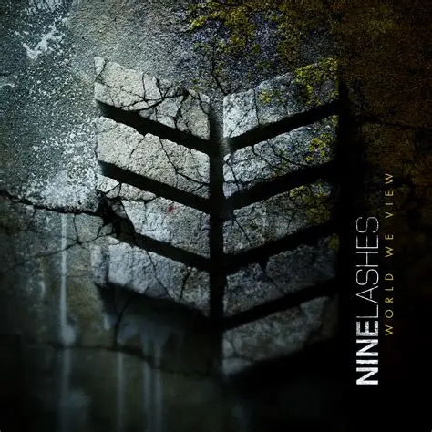
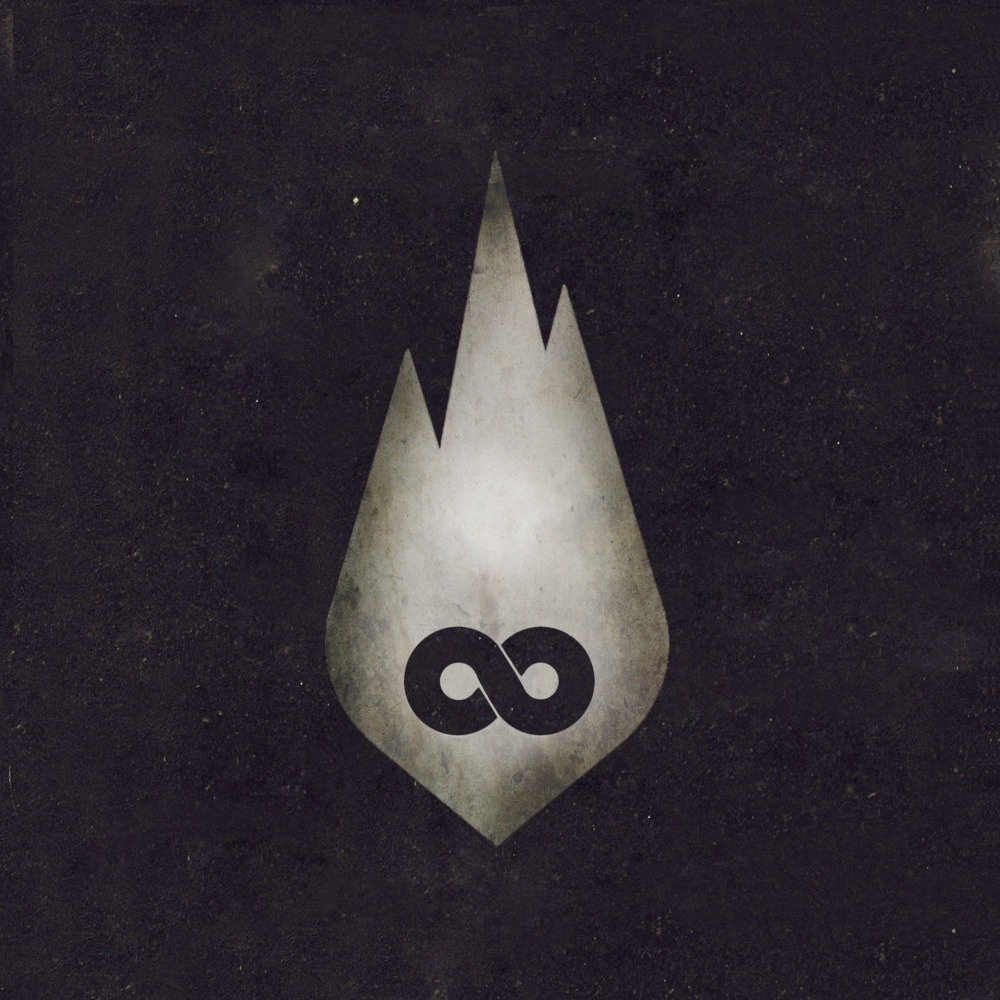

Suas músicas
Navegue pelas suas playlists aqui!
Recomendações
Encontre seu próximo ritmo!

World We View
Nine Lashes

The End Is Where We Begin
Thousand Foot Krutch
Tocando agora
Anthem Of The Lonely
Nine Lashes
Sobre o artista:
Formed in 2006, Nine Lashes are a Christian alternative rock band based in Birmingham, Alabama. Guitarist
Adam Jefferson and original drummer Keith Cunningham had played together in a previous band. They were soon
joined by Adam's younger brother Jonathan Jefferson on guitar, bassist Jared Lankford, and lead singer
Jeremy Dunn. Cunningham was later replaced by Noah Terrell on drums. After cutting their teeth opening for
several well-known Christian bands at churches in their native Alabama, Nine Lashes released their debut LP,
Escape, in 2009.